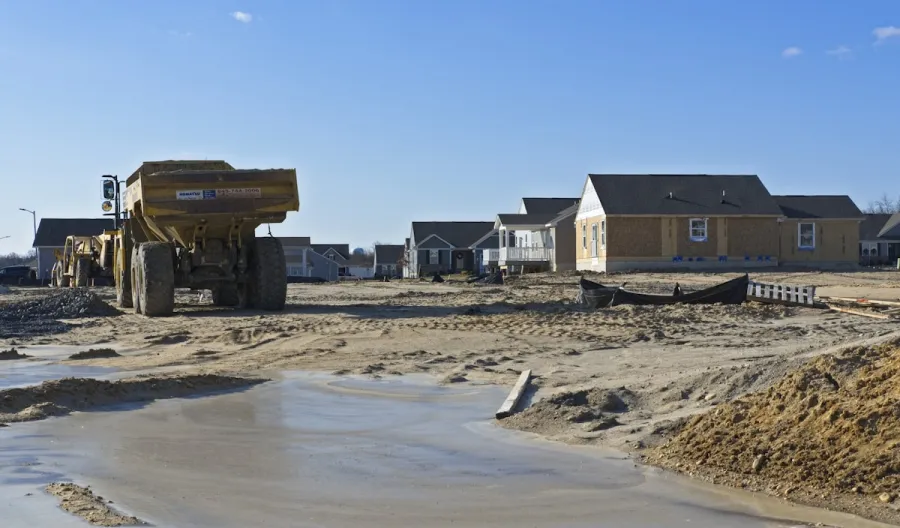

Kontejnerová doprava přímo od provozovatele
Kontejner přistavím, naložený odvezu. Praha-západ, Kladensko a okolí.
Pošlete adresu, fotku a co se veze. Matyáš Mašín vám před výjezdem potvrdí cenu, termín i to, co je v ceně. Přijedu vlastním autem s rukou a nosností až 8 t.
Pro přesnou cenu potřebuji 4 věci
adresa · materiál · odhad množství · místo pro auto
- Technika
- Vlastní auto s rukou, žádný dispečink
- Nosnost
- Až 8 t nákladu podle typu zakázky
- Oblast
- Praha-západ, Unhošť, Nučice, Kladensko
- Jistota
- Ověřitelný provozovatel a cena předem
Služby
Kontejner přistavím, naložený odvezu. Materiál přivezu na místo.
Řeším rekonstrukce, výkopy, vyklízení, zahrady i dovoz materiálu. U lehkého odpadu rozhoduje objem, u suti, betonu a zeminy hlavně hmotnost. Proto doporučuju službu i velikost kontejneru podle reálné zakázky, ne podle univerzní tabulky.

Přistavení kontejneru
Na stavbu, dvůr nebo k domu. Po naplnění kontejner zase odvezu.
Jak probíhá přistavení
Odvoz suti, zeminy a odpadu
Čistá suť, beton, zemina, dřevo, bioodpad i směsný stavební odpad po předchozí domluvě.
Co lze odvéztDovoz materiálu
Písek, štěrk, kačírek, recyklát, zemina a beton podle dostupnosti a místa složení.
Vybrat materiál
Zemní práce
Výkopy základů, bazénů a jezírek, rovnání terénu a odbahnění — stroje do 5 t.
Zemní práce a technikaCena
Cenu potvrdím podle čtyř konkrétních údajů
Pošlete obec, materiál, odhad množství a fotku přístupu. Řeknu vám, co je v ceně, co ji může změnit a zda jde o jednoduchou, běžnou nebo náročnější zakázku.
Čistá suť nebo beton
Nejvíc rozhodne hmotnost, čistota odpadu a bezpečné naložení. Nemíchat se dřevem, plastem nebo sádrokartonem.
Pošlete fotku hromady
Zemina z výkopu
U zeminy je důležitá vlhkost, množství, přístup k hromadě a možnost spojit odvoz s dovozem materiálu.
Napište obec a přístup
Směsný stavební odpad
Směs bývá citlivější na cenu. Složení odpadu je lepší říct předem, ne až při odvozu.
Vyfoťte složení odpadu
Lokality
Jezdím po celé Praze a Středočeském kraji
Nejbližší směr je okolí Svárova u Unhoště, Nučic u Rudné, Kladensko, Hostivice a Praha-západ. Prahu, Berounsko, Rakovnicko a další obce ve Středočeském kraji řeším podle trasy.
Hlavní směr
Svárov, Unhošť, Nučice, Rudná, Praha-západ, Kladno, Hostivice, Beroun, Praha a okolí.
Přehled lokalitPostup
Objednávka bez nejistoty: nejdřív si potvrdíme cenu, termín a podmínky
U kontejneru je nejhorší nejasná domluva. Proto před výjezdem řeším adresu, přístup, náklad, DPH, doklad a případné omezení stání.
Zavoláte nebo pošlete poptávku
Řeknete lokalitu, odpad nebo materiál, přibližné množství, termín a jestli jde o dvůr, ulici nebo stavbu.
Upřesníme cenu, DPH a co je v ní
Potvrdíme dopravu, skládkovné nebo materiál, dobu přistavení, doklad a případné věci, které mohou cenu změnit.
Přijedu po jasné domluvě
Přistavím kontejner, odvezu náklad nebo dovezu objednaný materiál — přesně podle toho, co jsme si potvrdili.
Kontakt
Pošlete údaje, cenu potvrdím podle skutečné zakázky
Nejrychlejší je telefon. Pro cenu potřebuji adresu, materiál, odhad množství, termín a informaci, kam se auto dostane. Fotka vjezdu nebo hromady často rozhodne rychleji než dlouhý popis.
Časté dotazy
Než objednáte
Kolik bude stát přistavení kontejneru?
Cena záleží na lokalitě, vzdálenosti, nákladu, množství, skládkovném, DPH a přístupu pro auto. Před výjezdem si potvrdíme, co je v ceně zahrnuté a co by ji mohlo změnit.
Kde nejrychleji obsluhujete kontejnery?
Nejbližší oblast je Svárov u Unhoště, Unhošť, Nučice, Rudná, Kladensko, Hostivice a Praha-západ. Jezdím ale i do Prahy a dalších částí Středočeského kraje podle trasy.
Co poslat, abych rychle dostal cenu?
Stačí obec nebo adresa, co se poveze, odhad množství, přístup pro auto a fotka místa. Když něco chybí, doplníme to po telefonu.
Kam lze kontejner postavit?
Ideálně na vlastní pozemek, dvůr nebo stavbu. Pokud má stát na ulici nebo veřejné komunikaci, může být potřeba povolení od obce nebo městské části.
Můžu míchat suť, dřevo a bioodpad?
Raději ne bez domluvy. Smíchaný odpad může být dražší na likvidaci. Když vím složení předem, navrhnu cenově rozumnější řešení.
Děláte i zemní práce a dovoz materiálu?
Ano. Řeším zemní práce, výkopy, odvoz zeminy a dovoz písku, štěrku, kačírku, recyklátu, zeminy nebo betonu podle dostupnosti a místa složení.